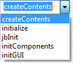
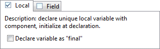
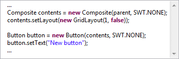
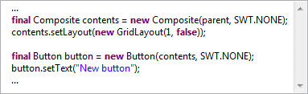
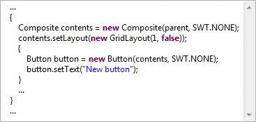
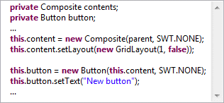

Use the existing creation style when it can be deduced
This preference determines whether eRCP Designer attempts to use the existing code creation style already in a file to generate code. eRCP Designer checks a file when it is opened in the editor to see if one style or the other is used. If only one of the styles is being used in a file, it will continue generating code in that style, regardless of what the other code generation settings. If no style is detected (no controls have been created yet) or if more than one style is detected, the eRCP Designer will generate code as specified in the other settings.
Method name for new statements
This preference determines in which method components will be created by default (in the event that a suitable method has not already be defined for the current class). If the method does not exist, it will be created and a call to it added to the constructor for the class. Various default choices are provided to match the code generation patterns of other GUI builders.
Default code generation settings
eRCP Designer supports a wide variety of code generation styles and can emulate most other Java GUI builders including NetBeans, JBuilder, the Eclipse Visual Editor, etc. Choose a Variable Generation style (Local or Field) and a Statement Generation style (Flat or Block). Many of the styles have additional options that can be set. Once any combination of settings is selected, you can see a preview of that code generation style in the Preview pane.
Variable generation
eRCP Designer supports several Variable Generation styles including Local or Field.
Local Variable Mode

In the Local variable generation style, each component is assigned to a unique local variable and initialized at the point of declaration. An option is provided to declare each variable as final. Note that component types marked as As Field on the Variables > Type Specific preference page will always be assigned to fields.




Field Mode

In the Field generation style, each component is assigned to a unique field and initialized at the point where it is first used. An option is provided to prefix each field reference with this.




Statement generation
eRCP Designer supports flat mode and block mode generation modes.
Flat Mode

In flat mode, each component is created in the same scope at the same indentation level. An option is provided to prefix the creation of each component with either a blank line or a comment.
Block Mode

In block mode, each component is created in its own scoped code block. Child components are created in nested blocks.